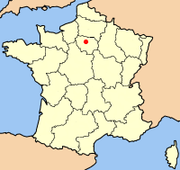

Pariz je glavni i najveći grad Francuske. Smješten je na obalama rijeke Seine u sjevernoj Francuskoj, u središtu pokrajine Île-de-France, također poznate kao "Pariška regija" (fra. Région parisienne). Stanovništvo grada Pariza, u svojim od 1860. uvelike nepromijenjenim granicama, procijenjuje se na 2 167 994 (siječanj 2006.), ali metropolitansko područje (aire urbaine) naseljava više od 11 milijuna stanovnika,kao najnaseljenije metropolitansko područje u Eurozoni.
Kao važno naselje tijekom više od dva tisućljeća, Pariz je danas jedan od vodećih svjetskih poslovnih i kulturnih središta, s utjecajima na politiku, obrazovanje, zabavu, masovne medije, modu, znanost i umjetnost, što sve doprinosi statusu Pariza kao jednog od globalnih gradova.U skladu s procjenama iz 2005., pariško gradsko područje najveća je europska gradska ekonomija, i peta u svijetu u popisu svjetskih gradova prema BDP-u.
Pariz je smješten na luku rijeke Seine i sadrži dva otoka, Île Saint Luois i veći Île de la Cité, koji tvore nastariji dio grada.
Ukupno, grad je relativno ravničarski, i najniža elevacija je 35 m nadmorske visine.
Pariz ima nekoliko istaknutih brda, od kojih je sa 130 metara najviši Montmartre.

Pariz, bez vanjskih parkova Bois de Boulogne i Bois de Vincennes, pokriva oval površine 86,928 km².
Posljednje veće proširenje gradskog područja 1860. nije mu podarilo samo suvremeni izgled već je i kreiralo dvadeset arondismana (gradskih općina).
Od 1860. gradsko područje od 78 km² neznatno je 1920-ih prošireno na 86,9 km². 1929., parkovi Bois de Boulogne i Bois de Vincennes službeno su pripojeni gradu što je gradsko područje povećalo na sadašnjih 105,39 km².
Danas je Pariz jedna od najvećih svjetskih aglomeracija koja obuhvaća najmanje 12 milijuna ljudi.
Osim Pariza najveci gradovi su: